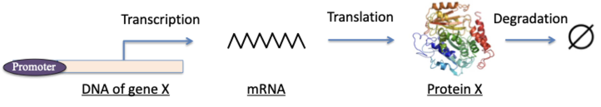
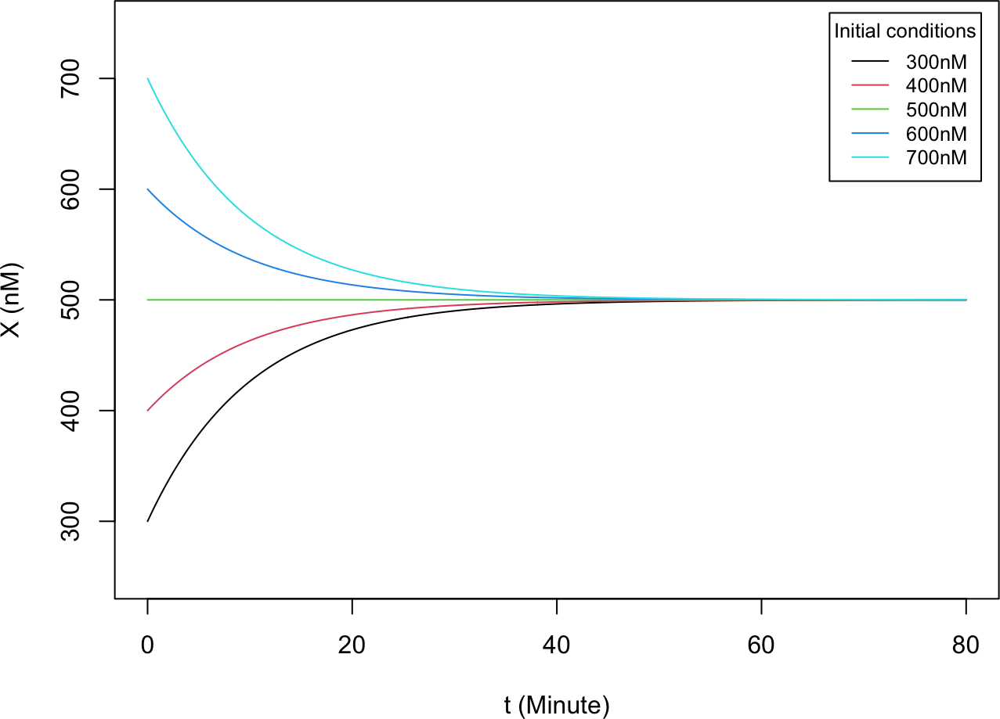
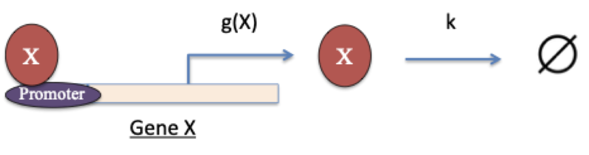
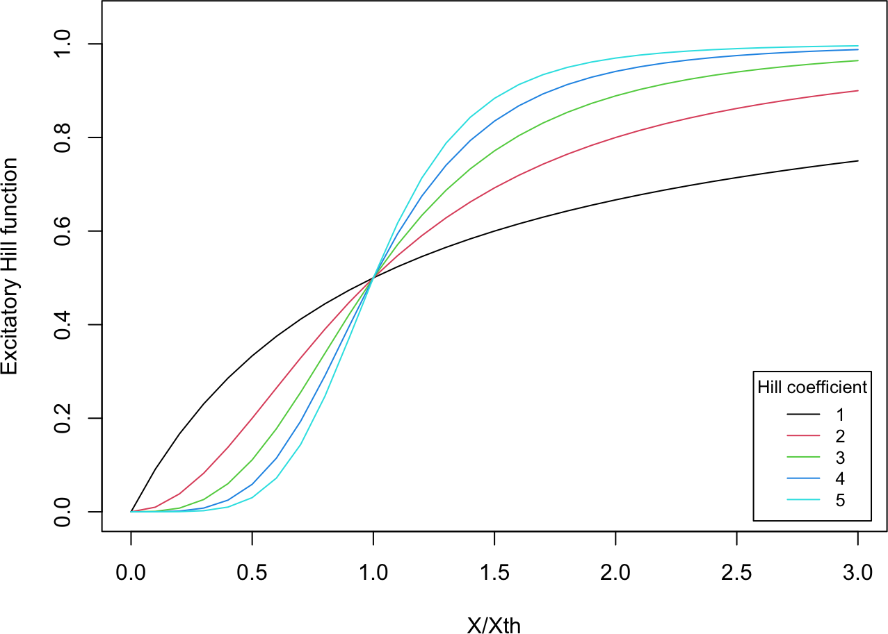

Starting here, we introduce numerical methods in the context of concrete real-world applications. Each section opens with the background of an application and the quantitative model behind it, then develops the associated numerical method. For every method we focus on three things: (1) the underlying theory, (2) its implementation in both R and Python, and (3) the libraries available in each language.
This first section is about how gene regulation can be turned into a set of rate equations, ordinary differential equations (ODEs) that track how the concentration of a gene product changes over time. The modeling framework used throughout follows the standard treatment of gene-regulatory circuits in systems biology (Alon 2019).
2A.1 Circuit of a constitutively expressed gene
Consider a gene whose expression is independent of any regulator. The full process (transcription, translation, and protein degradation) is sketched below.

The promoter of gene \(X\) plays no active role here. The symbol \(\varnothing\) denotes “null”, i.e., a protein \(X\) is removed in the degradation step. We adopt a simplified model in which transcription and translation are lumped into a single zero-order reaction with transcription rate \(g\), while degradation is a first-order reaction with degradation rate \(k\). The corresponding chemical scheme is
\[
\varnothing {\stackrel{g}{\rightarrow}} X {\stackrel{k}{\rightarrow}} \varnothing
\]
The rate equation for the level of gene \(X\) is
\[\begin{equation}
\frac{dX}{dt} = g - kX \tag{1}
\end{equation}\]
This is a typical ordinary differential equation (ODE). At steady state, the level \(X_s\) satisfies
Let us set \(g = 50\) nM per minute and \(k = 0.1\) per minute. The plots below show \(X(t)\) for five initial conditions, \(X = 300, 400, 500, 600, 700\) nM.
NoteRecipe 2A.1.1
Objective. Plot the time course of a constitutively expressed gene from several initial conditions and watch them settle to a common steady state.
Model. A gene transcribed at a constant rate g with linear degradation at rate k: dX/dt = g - k*X; its exact solution is X(t) = g/k + (X0 - g/k)*exp(-k*t).
Method. Direct evaluation of the exact solution over time (no numerical integration).
Test.g = 50 nM/min, k = 0.1 per min; initial values X0 = 300, 400, 500, 600, 700 nM; t = 0 to 80 min.
Show. A plot of X(t) versus time, one curve per initial condition, with the steady state g/k marked.
Verification. Every curve begins at its own X0 and approaches the steady state g/k = 500 nM; curves above 500 decay to it and those below rise.
R implementation
ode1 <-function(X0, t) { # analytical X(t) from Equation (6) g <-50; k <-0.1 X0 + (g / k - X0) * (1-exp(-k * t))}t_all <-seq(0, 80, 0.1) # time points (minutes)X0_all <-seq(300, 700, 100) # initial conditionsmy_col <-seq_len(5) # default colorsmy_label <-paste0(X0_all, "nM") # legend labelsplot(NULL, xlab ="t (Minute)", ylab ="X (nM)",xlim =c(0, 80), ylim =c(250, 750))for (i inseq_len(5)) {lines(t_all, ode1(X0_all[i], t_all), col = my_col[i])}legend("topright", inset =0.02, title ="Initial conditions",legend = my_label, col = my_col, lty =1, cex =0.8)

Python implementation
import numpy as npimport matplotlib.pyplot as pltdef ode1(X0, t): # analytical X(t) from Equation (6) g, k =50, 0.1return X0 + (g / k - X0) * (1- np.exp(-k * t))t_all = np.arange(0, 80+0.1, 0.1) # time points (minutes)X0_all = np.arange(300, 701, 100) # initial conditionsfig, ax = plt.subplots()for X0 in X0_all: ax.plot(t_all, ode1(X0, t_all), label=f"{X0}nM")ax.set_xlabel("t (Minute)"); ax.set_ylabel("X (nM)")ax.set_xlim(0, 80); ax.set_ylim(250, 750)
The system has a single stable steady state: regardless of the initial condition, \(X\) always relaxes to \(X_s = g/k = 500\) nM. Here an analytical solution is easy to obtain, but in most problems it is much harder or impossible to find one, so numerical integration becomes necessary. We introduce numerical methods for integrating ODEs in Part 2B.
2A.2 Circuit with a self-activating gene
Now consider a gene whose expression is regulated by its own product: protein \(X\) binds its own promoter and modifies the transcription rate, making it a function \(g(X)\).

Because \(X\) activates its own expression, the circuit is drawn as
Here \(X_{th}\) is the threshold level of \(X\) and \(n_X\) is the Hill coefficient. \(H^{ex}\) is nonlinear, rising from \(0\) at \(X = 0\) toward \(1\) as \(X \to \infty\). The Hill function originates from Hill’s model of cooperative oxygen binding to haemoglobin (Hill 1910) and is now the standard way to describe cooperative protein interactions and transcription-factor–DNA binding (Alon 2019). The plots below show \(H^{ex}\) for several Hill coefficients.
R implementation
hill_ex <-function(X, X_th, n) { # excitatory Hill function a <- (X / X_th)^n # X_th: threshold, n: Hill coefficient a / (1+ a)}X_all <-seq(0, 3, 0.1)n_all <-seq_len(5)my_col <-seq_len(5)my_label <-paste0(n_all)plot(NULL, xlab ="X/Xth", ylab ="Excitatory Hill function",xlim =c(0, 3), ylim =c(0, 1.05))for (i inseq_len(5)) {lines(X_all, hill_ex(X_all, 1, n_all[i]), col = my_col[i])}legend("bottomright", inset =0.02, title ="Hill coefficient",legend = my_label, col = my_col, lty =1, cex =0.8)

Python implementation
def hill_ex(X, X_th, n): # excitatory Hill function a = (X / X_th)**n # X_th: threshold, n: Hill coefficientreturn a / (1+ a)X_all = np.arange(0, 3+0.1, 0.1)n_all =range(1, 6)fig, ax = plt.subplots()for n in n_all: ax.plot(X_all, hill_ex(X_all, 1, n), label=str(n))ax.set_xlabel("X/Xth"); ax.set_ylabel("Excitatory Hill function")ax.set_xlim(0, 3); ax.set_ylim(0, 1.05)
Finally, we consider a two-gene circuit with transcription factors \(X\) and \(Y\) in which \(X\) represses gene \(Y\) and \(Y\) represses gene \(X\). This mutually repressive motif is the classic genetic toggle switch first engineered in Escherichia coli(Gardner et al. 2000).
The chemical rate equations for the levels of \(X\) and \(Y\) are
The system is now described by two coupled ODEs, with solutions \(X(t)\) and \(Y(t)\). Because there are two variables, more sophisticated tools are needed to analyze the dynamics; we take this up in Part 3A.
Alon, Uri. 2019. An Introduction to Systems Biology: Design Principles of Biological Circuits. 2nd ed. Chapman; Hall/CRC. https://doi.org/10.1201/9780429283321.
Gardner, Timothy S., Charles R. Cantor, and James J. Collins. 2000. “Construction of a Genetic Toggle Switch in Escherichia coli.”Nature 403 (6767): 339–42. https://doi.org/10.1038/35002131.
Hill, Archibald Vivian. 1910. “The Possible Effects of the Aggregation of the Molecules of Haemoglobin on Its Dissociation Curves.”The Journal of Physiology 40: iv–vii.